"La seule chose dont il faille avoir peur est la peur elle-même" - Franklin D. Roosevelt. Conseil douteux.
Bien sûr, on nous rappelle à raison de ne pas se ruer sur le papier toilette. Mais si les responsables politiques craignent la peur et le désordre, ils minimiseront aussi les véritables dangers pour éviter toute panique générale. La peur n'est pas un problème. Le problème est la manière dont nous la canalisons. La peur nous donne l'énergie pour faire face aux dangers de l'instant, et nous prépare aux dangers futurs.
Pour être honnête, nous (Marcel - épidémiologiste et Nicky - art/code) sommes inquiets. Tu l'es aussi n'est-ce pas? C'est pourquoi de nos peurs sont nées ces simulations interactives, pour que tu puisses à ton tour canaliser tes peurs et comprendre:
- Ces derniers mois (initiation à l'épidémiologie, modèle SEIR, R et R0)
- Les mois à venir (confinement, traçage de contacts, masques)
- Les années à venir (perte d'immunité? vaccin introuvable?)
Ce guide (publié le 1er Mai 2020. clique sur cette note!→1) est censé et vous donner de l'espoir, et vous faire peur. Pour vaincre le COVID-19 en préservant aussi nos santés mentals et financières, nous devons faire preuve d'optimisme pour élaborer des plans, et de pessimisme pour élaborer des plans B. Comme l'a dit un jour Gladys Bronwyn Stern, “L'optimiste invente l'avion, le pessimiste invente le parachute.”
Alors accrochez-vous: nous entrons dans une zone de turbulence.

Les pilotes utilisent des simulateurs de vol pour apprendre comment ne pas crasher des avions.
Les épidémiologistes utilisent des simulateurs d'épidémie pour apprendre comment ne pas crasher l'humanité.
Créons notre propre très, très simple "simulateur de vol épidémique" ! Dans cette simulation, les individus Infectieux
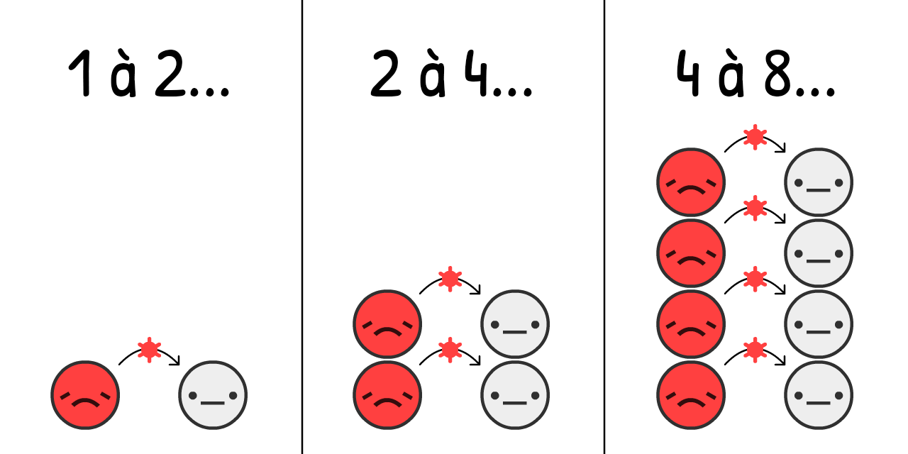
On estime qu'au début de l'épidémie de COVID-19, le virus allait d'un
Que se passe-t-il si nous simulons le cas "double tous les 4 jours", et rien de plus, sur une population qui commence avec seulement 0.001% de
Cliquez sur "Lancer" pour réaliser une simulation! Vous pouvez relancer avec d'autres paramètres quand la simulation est finie: (limites techniques: 3)
Ceci est la courbe de croissance exponentielle.* Ça commence petit, puis ça explose. De "Oh ce n'est juste qu'une grippe" à "Ah oui, les grippes n'engendrent pas de fosses communes dans New-York".

Pour autant, cette simulation est fausse. La croissance exponentielle, heureusement, ne peut pas durer. Si une partie de la population a déjà, le virus, cela empêche sa diffusion:
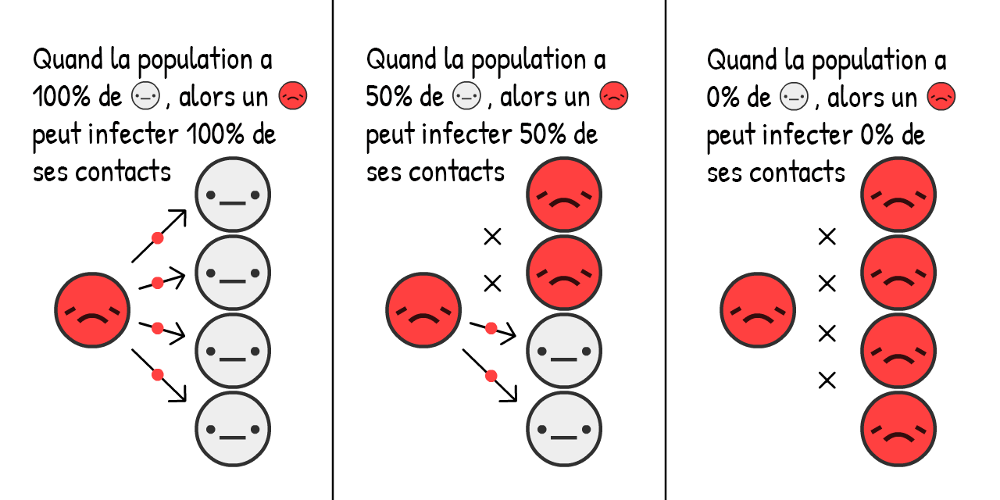
Plus il y a de
En quoi cela change la croissance d'une épidémie ? Il n'y a qu'à le simuler:
Ceci est la courbe de croissance logistique "en S". Ça commence doucement, ça explose, puis ça ralenti à nouveau.
Pour autant, cette simulation est encore fausse. On passe à côté du fait qu'un individu Infectieux
Pour faire simple, supposons que tout les individus Infectieux
Pour le COVID-19, on estime qu'un individu est Infectieux
Ceci est l'inverse de la croissance exponentielle, c'est la courbe de décroissance exponentielle.
Maintenant, que se passe-t-il lorsqu'on simule la courbe de croissance logistique avec les guérisons ?

Voyons donc ça !
La courbe Rouge représente les cas
La courbe Grise représente le total de cas (actuels
Et c'est de là que nous viens cette fameuse courbe! Ce n'est pas une courbe de Gauss, ni même une courbe "log-normale". Ça n'a pas de nom, mais vous l'avez vue des millions de fois et vous priez pour qu'elle s'applatisse.
C'est le Modèle SIR, 5
(
la deuxième idée la plus importante de notre initiation à l'épidémiologie:
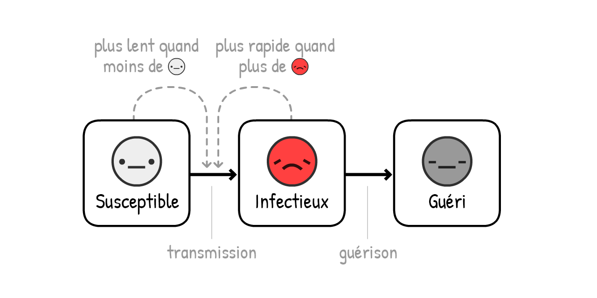
NB: Les simulations qui conseillent les décideurs politiques sont bien, bien plus sophistiquées que ça! Néanmoins le modèle SIR suffit pour trouver un résultat global similaire, même si certaines nuances lui échappe.
Ajoutons donc une autre nuance: avant qu'un
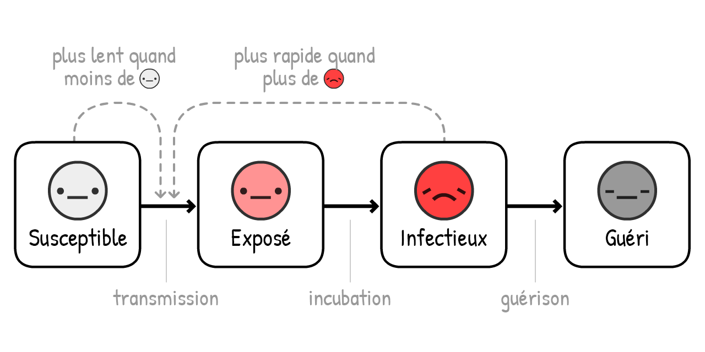
(Cette variante est appellée le Modèle SEIR6, avec "E" pour "Exposé"
Pour le COVID-19, on estime qu'un individu est infecté-mais-pas-encore-infectieux
La courbe Rouge + Rose représente les cas actuels (infectieux
La courbe Grise représente le total de cas (actuels
Pas beaucoup de changement! Le temps que l'on passe en Exposé
Mais pourquoi ? A cause du premier concepte clé de l'épidémiologie:

La version courte du "Nombre de reproduction". Il s'agit du nombre moyen de personnes qu'un
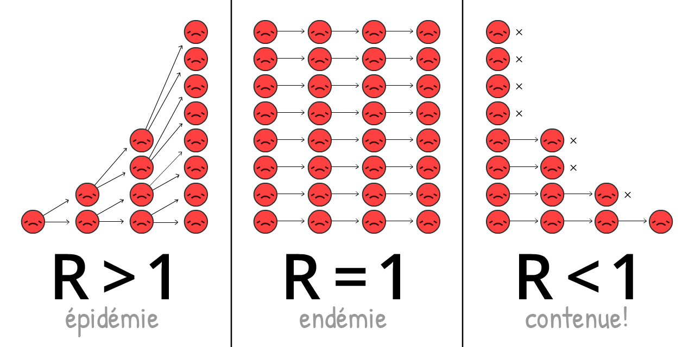
R évolue au cours d'une vague, au fur et à mesure que l'immunité et les mesures d'intervention se développent.
R0 est la valeur de R au début de la vague, avant l'immunité et les mesures d'intervention. R0 reflète la force du virus-même, mais il varie quand même d'un endroit à l'autre. Par exemple, R0 est plus grand dans les villes denses qu'en campagne plus espacée.
(La plupart des articles d'actualité - et même des publications scientifiques ! - confondent R et R0. Encore une fois, la terminologie scientifique est pleine d'absurdité)
Le R0 pour "la" grippe saisonnière tourne autour de 1.288. Cela signifie qu'au début d'une vague de grippe, chaque
Le R0 pour le COVID-19 est estimé à environ 2.29, bien qu'une étude pas encore finalisée estime qu'il était de 5.7(!) à Wuhan.10
Dans nos simulations - au début et en moyenne - un
Jouez avec ce calculateur de R0 pour voir comment R0 dépend du temps de guérison et de la fréquence de nouvelle infection:
Mais souvenez-vous, moins il y a de
Lorsque suffisament de gens sont immunisés, R < 1 et le virus est contenu ! On appelle ça l'immunité collective. Pour la grippe, l'immunité collective est obtenue par la vaccination. Essayer d'obtenir "l'immunité collective naturelle" en laissant les gens être infectés est une très mauvaise idée. (Mais pas pour la raison que vous avez peut-être en tête ! Nous l'expliquerons plus tard.)
Maintenant, lançons le modèle SEIR encore une fois, mais en montrant R0, l'évolution de R dans le temps et le seuil de l'immunité collective:
Attention: le total des cas ne s'arrête pas au seuil de l'immunité collective, mais le dépasse ! Et il passe le seuil exactement au moment où le nombre actuel de cas est au maximum. (C'est ainsi quels que soient les réglages - essayez vous-même !)
Cela est dû au fait que lorsqu'il y a plus de non-
Si vous ne deviez retenir qu'une seule chose de ce guide, ce serait ceci - c'est un graphique très complexe, alors prenez le temps de l'assimiler complètement:
Cela signifie qu'il n'y a PAS besoin d'infecter tout le monde, ou même presque tout le monde, pour stopper le COVID-19 !
C'est paradoxal. Le COVID-19 est extrêmement contagieux et pourtant, pour le contenir, il faut "seulement" éviter plus de 60% des infections. 60% ?! Si c'était une note d'école, ce serait un 12/20. Mais si R0 = 2.5, alors le réduire de 61% nous donne R = 0.975, ce qui est R < 1, donc le virus est contenu ! (formule exacte:12)
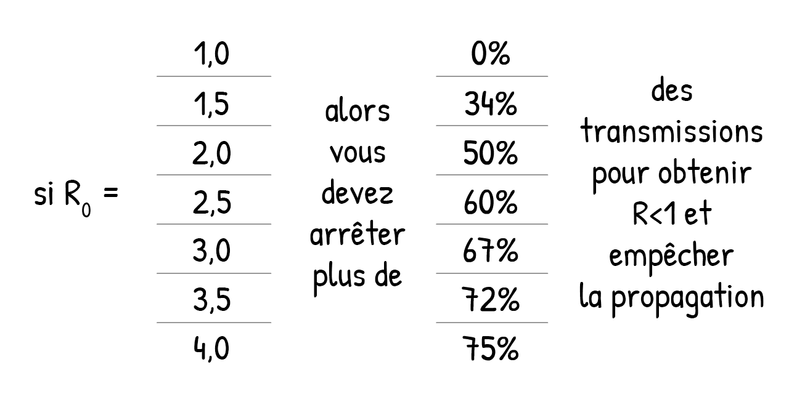
(Si vous pensez que R0 ou d'autres paramètres dans vos simulations sont trop haut/bas, c'est bien, vous défiez nos hypothèses ! Il y aura un mode "bac à sable" à la fin de ce guide, où vous pourrez entrer vos propres paramètres et voir ce que ça donne.)
Toutes les mesures contre le COVID-19 dont vous avez entendu parler - lavage des mains, distance sociale, confinements, auto-isolation, suivi des contacts et mise en quarantaine, port du masque et même "immunité collective" - elles ont toutes le même but:
Obtenir R < 1.
Maintenant, utilisons notre "simulateur de vol épidémiologique" pour répondre à la question suivante: Comment peut-on obtenir R < 1 tout en protégeant notre santé mentale et financière ?*
Préparez-vous à un atterrissage d'urgence...
...could have been worse. Here's a parallel universe we avoided:
Scenario 0: Do Absolutely Nothing
Around 1 in 20 people infected with COVID-19 need to go to an ICU (Intensive Care Unit).13 In a rich country like the USA, there's 1 ICU bed per 3400 people.14 Therefore, the USA can handle 20 out of 3400 people being simultaneously infected – or, 0.6% of the population.
Even if we more than tripled that capacity to 2%, here's what would've happened if we did absolutely nothing:
Not good.
That's what the March 16 Imperial College report found: do nothing, and we run out of ICUs, with more than 80% of the population getting infected. (remember: total cases overshoots herd immunity)
Even if only 0.5% of infected die – a generous assumption when there's no more ICUs – in a large country like the US, with 300 million people, 0.5% of 80% of 300 million = still 1.2 million dead... IF we did nothing.
(Lots of news & social media reported "80% will be infected" without "IF WE DO NOTHING". Fear was channelled into clicks, not understanding. Sigh.)
Scenario 1: Flatten The Curve / Herd Immunity
The "Flatten The Curve" plan was touted by every public health organization, while the United Kingdom's original "herd immunity" plan was universally booed. They were the same plan. The UK just communicated theirs poorly.15
Both plans, though, had a literally fatal flaw.
First, let's look at the two main ways to "flatten the curve": handwashing & physical distancing.
Increased handwashing cuts flus & colds in high-income countries by ~25%16, while the city-wide lockdown in London cut close contacts by ~70%17. So, let's assume handwashing can reduce R by up to 25%, and distancing can reduce R by up to 70%:
Play with this calculator to see how % of non-
Now, let's simulate what happens to a COVID-19 epidemic if, starting March 2020, we had increased handwashing but only mild physical distancing – so that R is lower, but still above 1:
Three notes:
This reduces total cases! Even if you don't get R < 1, reducing R still saves lives, by reducing the 'overshoot' above herd immunity. Lots of folks think "Flatten The Curve" spreads out cases without reducing the total. This is impossible in any Epidemiology 101 model. But because the news reported "80%+ will be infected" as inevitable, folks thought total cases will be the same no matter what. Sigh.
Due to the extra interventions, current cases peak before herd immunity is reached. In fact, in this simulation, total cases only overshoots a tiny bit above herd immunity – the UK's plan! At that point, R < 1, you can let go of all other interventions, and COVID-19 stays contained! Well, except for one problem...
You still run out of ICUs. For several months. (and remember, we already tripled ICUs for these simulations)
That was the other finding of the March 16 Imperial College report, which convinced the UK to abandon its original plan. Any attempt at mitigation (reduce R, but R > 1) will fail. The only way out is suppression (reduce R so that R < 1).
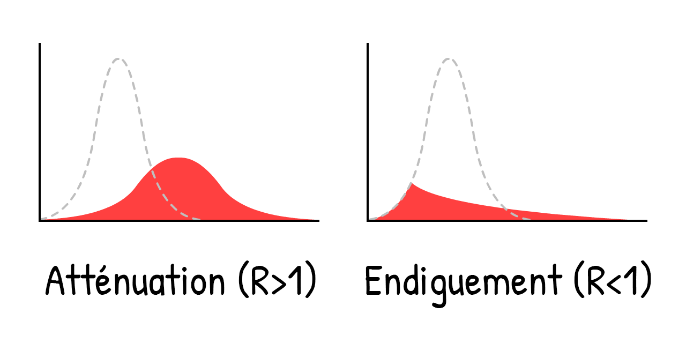
That is, don't merely "flatten" the curve, crush the curve. For example, with a...
Scenario 2: Months-Long Lockdown
Let's see what happens if we crush the curve with a 5-month lockdown, reduce
Oh.
This is the "second wave" everyone's talking about. As soon as we remove the lockdown, we get R > 1 again. So, a single leftover
A lockdown isn't a cure, it's just a restart.
So, what, do we just lockdown again & again?
Scenario 3: Intermittent Lockdown
This solution was first suggested by the March 16 Imperial College report, and later again by a Harvard paper.19
Here's a simulation: (After playing the "recorded scenario", you can try simulating your own lockdown schedule, by changing the sliders while the simulation is running! Remember you can pause & continue the sim, and change the simulation speed)
This would keep cases below ICU capacity! And it's much better than an 18-month lockdown until a vaccine is available. We just need to... shut down for a few months, open up for a few months, and repeat until a vaccine is available. (And if there's no vaccine, repeat until herd immunity is reached... in 2022.)
Look, it's nice to draw a line saying "ICU capacity", but there's lots of important things we can't simulate here. Like:
Mental Health: Loneliness is one of the biggest risk factors for depression, anxiety, and suicide. And it's as associated with an early death as smoking 15 cigarettes a day.20
Financial Health: "What about the economy" sounds like you care more about dollars than lives, but "the economy" isn't just stocks: it's people's ability to provide food & shelter for their loved ones, to invest in their kids' futures, and enjoy arts, foods, videogames – the stuff makes life worth living. And besides, poverty itself has horrible impacts on mental and physical health.
Not saying we shouldn't lock down again! We'll look at "circuit breaker" lockdowns later. Still, it's not ideal.
But wait... haven't Taiwan and South Korea already contained COVID-19? For 4 whole months, without long-term lockdowns?
How?
Scenario 4: Test, Trace, Isolate
"Sure, we *could've* done what Taiwan & South Korea did at the start, but it's too late now. We missed the start."
But that's exactly it! “A lockdown isn't a cure, it's just a restart”... and a fresh start is what we need.
To understand how Taiwan & South Korea contained COVID-19, we need to understand the exact timeline of a typical COVID-19 infection21:
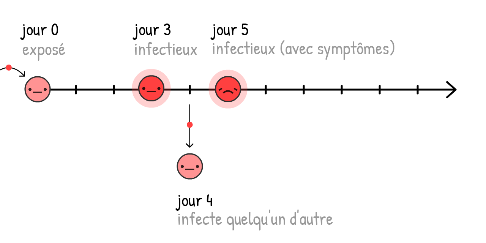
If cases only self-isolate when they know they're sick (that is, they feel symptoms), the virus can still spread:
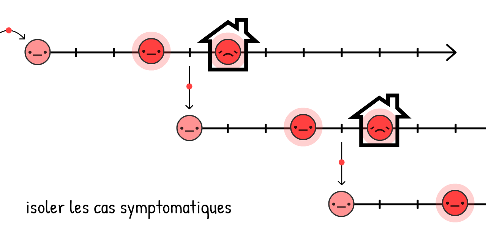
And in fact, 44% of all transmissions are like this: pre-symptomatic! 22
But, if we find and quarantine a symptomatic case's recent close contacts... we stop the spread, by staying one step ahead!
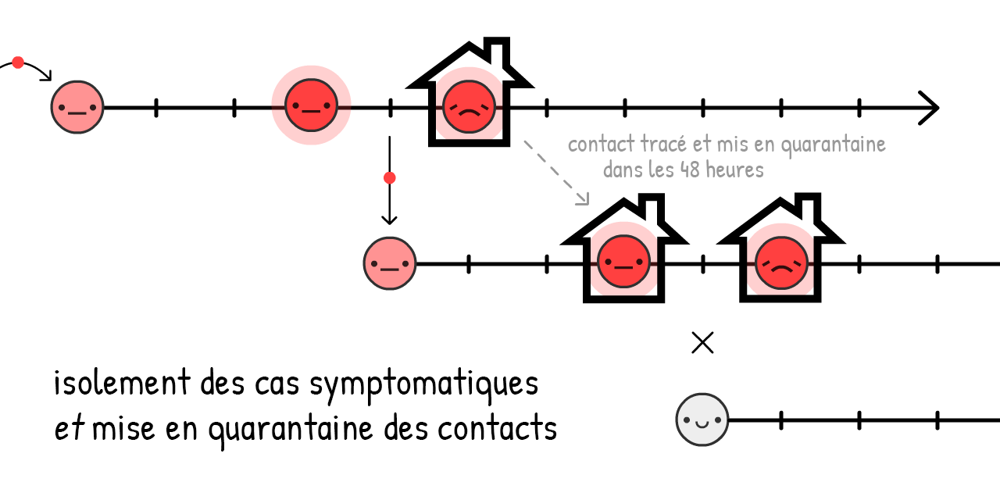
This is called contact tracing. It's an old idea, was used at an unprecedented scale to contain Ebola23, and now it's core part of how Taiwan & South Korea are containing COVID-19!
(It also lets us use our limited tests more efficiently, to find pre-symptomatic
Traditionally, contacts are found with in-person interviews, but those alone are too slow for COVID-19's ~48 hour window. That's why contact tracers need help, and be supported by – NOT replaced by – contact tracing apps.
(This idea didn't come from "techies": using an app to fight COVID-19 was first proposed by a team of Oxford epidemiologists.)
Wait, apps that trace who you've been in contact with?... Does that mean giving up privacy, giving in to Big Brother?
Heck no! DP-3T, a team of epidemiologists & cryptographers (including one of us, Marcel Salathé) is already making a contact tracing app – with code available to the public – that reveals no info about your identity, location, who your contacts are, or even how many contacts you've had.
Here's how it works:

Along with similar teams like TCN Protocol24 and MIT PACT25, they've inspired Apple & Google to bake privacy-first contact tracing directly into Android/iOS.26 (Don't trust Google/Apple? Good! The beauty of this system is it doesn't need trust!) Soon, your local public health agency may ask you to download an app. If it's privacy-first with publicly-available code, please do!
But what about folks without smartphones? Or infections through doorknobs? Or "true" asymptomatic cases? Contact tracing apps can't catch all transmissions... and that's okay! We don't need to catch all transmissions, just 60%+ to get R < 1.
(Rant about the confusion about pre-symptomatic vs "true" asymptomatic. "True" asymptomatics are rare:27)
Isolating symptomatic cases would reduce R by up to 40%, and quarantining their pre/a-symptomatic contacts would reduce R by up to 50%28:
Thus, even without 100% contact quarantining, we can get R < 1 without a lockdown! Much better for our mental & financial health. (As for the cost to folks who have to self-isolate/quarantine, governments should support them – pay for the tests, job protection, subsidized paid leave, etc. Still way cheaper than intermittent lockdown.)
We then keep R < 1 until we have a vaccine, which turns susceptible
(Note: this calculator pretends the vaccines are 100% effective. Just remember that in reality, you'd have to compensate by vaccinating more than "herd immunity", to actually get herd immunity)
Okay, enough talk. Here's a simulation of:
- A few-month lockdown, until we can...
- Switch to "Test, Trace, Isolate" until we can...
- Vaccinate enough people, which means...
- We win.
So that's it! That's how we make an emergency landing on this plane.
That's how we beat COVID-19.
...
But what if things still go wrong? Things have gone horribly wrong already. That's fear, and that's good! Fear gives us energy to create backup plans.
The pessimist invents the parachute.
Scenario 4+: Masks For All, Summer, Circuit Breakers
What if R0 is way higher than we thought, and the above interventions, even with mild distancing, still aren't enough to get R < 1?
Remember, even if we can't get R < 1, reducing R still reduces the "overshoot" in total cases, thus saving lives. But still, R < 1 is the ideal, so here's a few other ways to reduce R:
Masks For All:
"Wait," you might ask, "I thought face masks don't stop you from getting sick?"
You're right. Masks don't stop you from getting sick29... they stop you from getting others sick.
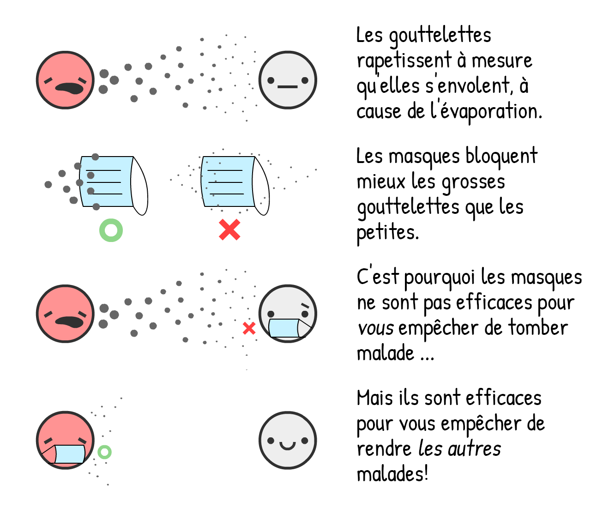
To put a number on it: surgical masks on the sick person reduce cold & flu viruses in aerosols by 70%.30 Reducing transmissions by 70% would be as large an impact as a lockdown!
However, we don't know for sure the impact of masks on COVID-19 specifically. In science, one should only publish a finding if you're 95% sure of it. (...should.31) Masks, as of May 1st 2020, are less than "95% sure".
However, pandemics are like poker. Make bets only when you're 95% sure, and you'll lose everything at stake. As a recent article on masks in the British Medical Journal notes,32 we have to make cost/benefit analyses under uncertainty. Like so:
Cost: If homemade cloth masks, same as the cost of all that soap for handwashing. If surgical masks, more expensive but still pretty cheap.
Benefit: Even if it's a 50–50 chance of surgical masks reducing transmission by 0% or 70%, the average "expected value" is still 35%, same as a half-lockdown! So let's guess-timate that surgical masks reduce R by up to 35%. (Again, you can challenge our assumptions by turning the sliders up/down)
Here's a calculator of how masks reduce R! You can switch between cloth & surgical: (assumes cloth masks are 2/3 as effective as surgical masks33)
(other arguments for/against masks:34)
Masks alone won't get R < 1. But if handwashing & "Test, Trace, Isolate" only gets us to R = 1.10, having just 2/3 of people wear cloth masks would tip that over to R < 1, virus contained!
Summer:
Okay, this isn't an "intervention" we can control, but it will help! Some news outlets report that summer won't do anything to COVID-19. They're half right: summer won't get R < 1, but it will reduce R.
For COVID-19, every extra 1° Celsius (2.2° Fahrenheit) makes R drop by 1.2%.35 The summer-winter difference in New York City is 15°C (60°F), so summer will make R drop by 18%.
Summer alone won't make R < 1, but if we have limited resources, we can scale back some interventions in the summer – so we can scale them higher in the winter.
A "Circuit Breaker" Lockdown:
And if all that still isn't enough to get R < 1... we can do another lockdown.
But we wouldn't have to be 2-months-closed / 1-month-open over & over! Because R is reduced, we'd only need one or two more "circuit breaker" lockdowns before a vaccine is available. (Singapore had to do this recently, "despite" having controlled COVID-19 for 4 months. That's not failure: this is what success takes.)
Here's a simulation a "lazy case" scenario:
- Lockdown, then
- A moderate amount of hygiene + "Test, Trace, Isolate" + cloth "Masks For All", then...
- One more "circuit breaker" lockdown before a vaccine's found.
Not to mention all the other interventions we could do, to further push R down:
- Travel restrictions/quarantines
- Temperature checks at malls & schools
- Deep-cleaning public spaces
- Replacing hand-shaking with foot-bumping
- And all else human ingenuity shall bring
. . .
We hope these plans give you hope.
Even under a pessimistic scenario, it is possible to beat COVID-19, while protecting our mental and financial health. Use the lockdown as a "reset button", keep R < 1 with case isolation + privacy-protecting contract tracing + at least cloth masks for all... and life can get back to a normal-ish!
Sure, you may have dried-out hands. But you'll get to invite a date out to a comics bookstore! You'll get to go out with friends to watch the latest Hollywood cash-grab. You'll get to people-watch at a library, taking joy in people going about the simple business of being alive.
Even under the worst-case scenario... life perseveres.
Alors maintenant, faisons des plans pour quelques scénarios catastrophes. Amérissage, attrapez votre gilet de sauvetage et suivez les lumières vers les sorties de secours:
Vous attrapez le COVID-19 et en guérissez. Ou vous recevez un vaccin. Dans les deux cas, vous êtes maintenant immunisé·e...
...mais pour combien de temps?
- Le COVID-19 est étroitement lié au SARS, qui rend ses survivants immunisés pour deux ans.36
- Le coronavirus causant "le" rhume procure 8 mois d'immunité.37
- On a rapporté des cas de guéris du COVID-19 qui ont été, plus tard, à nouveau testés positivement, mais ce n'est pas clair ces cas sont des faux positifs.38
- Une étude pas encore revue par les pairs effectuée sur des singes suggère que l'immunité au coronavirus du COVID-19 durerait au moins 28 jours.39
Mais pour le COVID-19 chez les humains, au 1er mai 2020, "Pour combien de temps" est encore une grande inconnue.
Pour ces simulations, disons que c'est un an.
Voici une simulation commençant avec 100% de
Le retour du déclin exponentiel !
Il s'agit du Modèle SEIRS. Le dernier "S" signifie Susceptible
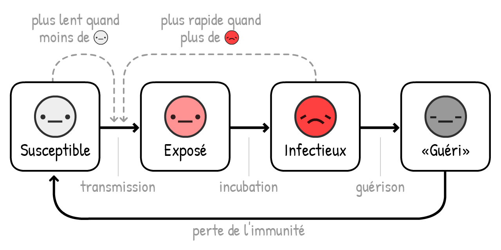
Maintenant, simulons une vague de COVID-19 sur 10 ans, sans intervention... si l'immunité ne dure qu'un an:
Dans les simulations précédentes, nous avions seulement un pic dépassant la capacité en respirateurs. Maintenant, nous en avons plusieurs, et les cas
R = 1, c'est une endémie.
Heureusement, comme l'été réduit R, la situation va s'améliorer:
Oh.
contre toute attente, l'été rend les pics plus sévères et plus réguliers ! C'est parce que l'été réduit les nouveaux
Heureusement, la solution à ce problème est simple - vacciner les gens chaque automne/hiver, à la manière de ce que l'on fait avec le vaccin de la grippe.
(Après avoir lancé l'enregistrement, essayez de simuler vos propres campagnes de vaccination ! Souvenez-vous que vous pouvez mettre en pause et continuer la simulation n'importe quand)
Mais voici venue la question qui fait peur:
Et s'il n'y a pas de vaccin avant plusieurs années ? Voire jamais ?
Pour être clair: c'est improbable. La plupart des épidémiologistes s'attendent à un vaccin d'ici un ou deux ans. Alors oui, il n'y a jamais eu de vaccin pour aucun des autres coronavirus dans le passé, mais c'est parce que le SARS a été rapidement éradiqué et que "le" rhume n'en valait pas la peine.
Mais quand même, des chercheurs des maladies infectieuses ont exprimé des inquiétudes: Et si on ne pouvait en fabriquer assez ?40 Et si il arrivait bâclé et qu'il n'était pas sûr ?41
Même dans le scénario catastrophe "sans vaccin", nous avons 3 échappatoires. Du plus au moins terrible:
1) Intervenir temporairement ou modérément pour garantir R<1 dans le but d'atteindre "l'immunité collective naturelle". (Attention: cela va provoquer de nombreuses morts et séquelles pulmonaires. Et ça ne fonctionne pas si l'immunité ne dure pas.)
2) Intevenir de manière permanente pour maintenir R<1. Les suivis des contacts et le port du masque deviennent alors la nouvelle norme du monde post-COVID-19, tout comme les tests de MST et le port du préservatif sont devenus la nouvelle norme dans le monde post-VIH.
3) Intervenir pour maintenir R<1 jusqu'à que soient développés des traitements qui rendent le COVID-19 bien, bien moins probable de demander des soins critiques. (Ce qu'on devrait faire de toute façon !) Diviser le besoin de respirateur par 10 est équivalent à multiplier la capacité en respirateurs par 10:
Voici une simulation sans immunité durable, sans vaccin et sans même aucune intervention - seule la capacité à survivre aux longs pics augmente lentement*:
Même dans le pire des scénarios cauchemardesques... La vie continue.
. . .
Vous voudrez peut-être remettre en question nos hypothèses et essayer différents R0 ou nombres. Ou même essayer de simuler vos propres combinaisons de plans d'intervention !
Voici un mode (optionel) "bac à sable", où tout est disponible. (Fais défiler pour voir tous les contrôles.) Simule et joue autant que le coeur t'en dit:
Ce "simulateur de vol épidémiologique" nous a tant appris. Il nous a permis de répondre à des questions sur les derniers mois, sur ceux à venir et sur les prochaines années.
Finalement, retournons à la...
L'avion a coulé. Nous nous sommes précipités sur des canots de sauvetages. C'est le moment de trouver la terre ferme.42
Des équipes d'épidémiologistes et de décideurs (de gauche, de droite, et multi-partisanes) sont arrivées à un consensus sur la manière de battre le COVID-19, tout en protégeant nos vies et nos libertés.
Voilà grossièrement l'idée, avec quelques plans de rechange (moins consensuels):
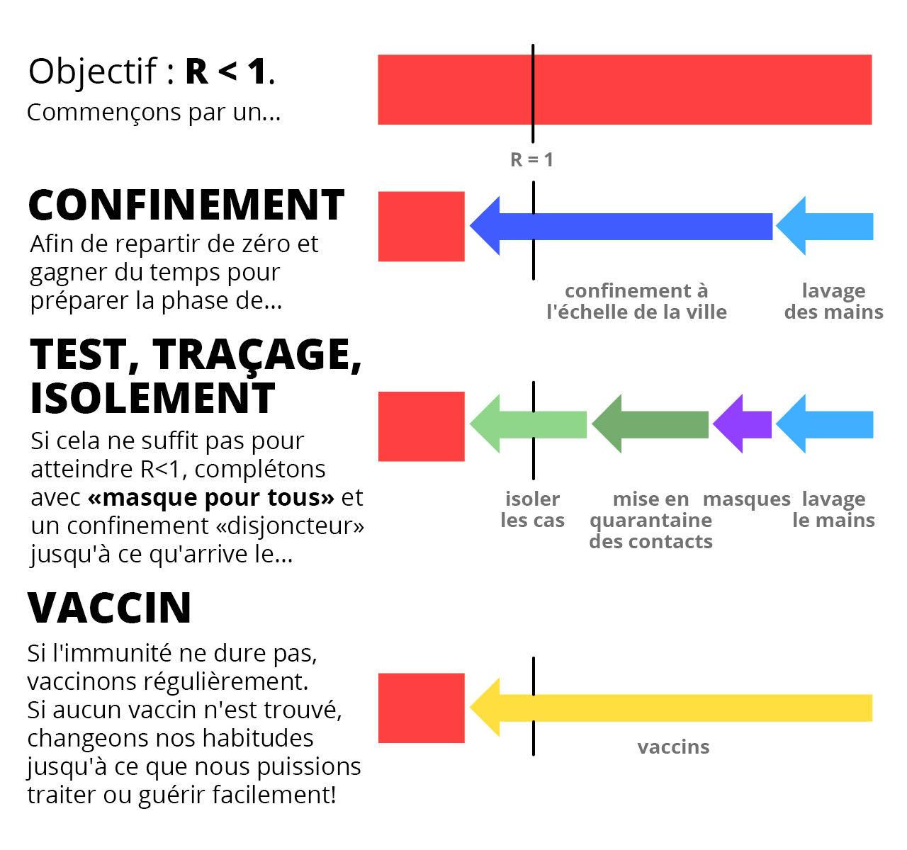
Qu'est ce que ça veut dire pour vous maintenant ?
Pour tout le monde: Respectez le confinement pour qu'on puisse sortir de la Phase I aussi vite que possible. Lavez-vous les mains. Fabriquez vos propres masques. Téléchargez une application de suivi des contacts respectueuse de vos données personnelles lorsqu'elles seront disponibles le mois prochain. Restez en forme, physiquement et mentalement ! Et écrivez à votre décideur local de bouger ses fesses et...
Pour les décideurs: Faites des lois qui supportent ceux qui doivent se mettre en auto-isolement/quarantaine. Engagez plus d'agents de suivi manuel des contacts, supportés* par des applications de suivi des contacts qui respectent la vie privée. Dirigez plus de fonds vers les trucs qu'on devrait fabriquer, comme...
Pour les fabriquants: Fabriquez des tests. Fabriquez des respirateurs. Fabriquez de l'équipement de protection personnel pour les hôpitaux. Fabriquez des tests. Fabriquez des masques. Fabriquez des applications. Fabriquez des antiviraux, des prophylactiques et autres traitements qui ne sont pas vaccins. Fabriquez des vaccins. Fabriquez des tests. Fabriquez des tests. Fabriquez de l'espoir.
Ne minimisez pas la peur pour fabriquer de l'espoir. Notre peur devrait faire équipe avec notre espoir, comme les inventeurs de l'avions et du parachute. C'est en se préparant à des futurs épouvantables qu'on crée un futur plein d'espérance.
La seule chose à craindre est l'idée que la seule chose dont il faille avoir peur est la peur elle-même.
-
Ces notes contiendront des sources, des liens et des commentaires bonus comme celui-ci! ↩
Ce guide a été publié le 1er Mai 2020. De nombreux détails deviendront obsolètes, mais nous sommes convaincus que ce guide couvre 95% des futurs possibles, et que notre initiation à l'épidémiologie vous sera bien utile.
-
“The mean [serial] interval was 3.96 days (95% CI 3.53–4.39 days)”. Du Z, Xu X, Wu Y, Wang L, Cowling BJ, Ancel Meyers L Traduction : "L'intervalle [sériel] moyen était de 3.96 jours (intervalle de confiance à 95% : 3.53–4.39 jours)". (Attention: les pré-publications ne sont pas considérées comme des versions finales) ↩
-
Attention: toutes ses simulations sont très simplificatrices, à des fins éducatives. ↩
Une simplification: Quand la simulation est parametrée pour "Infecter 1 nouvelle personne tous les X jours", elle va en réalité augmenter le nombre d'infectés d'1/X chaque jour. De même pour les prochains paramètres dans ces simulations: "Guérir tous les X jours" est simulé en "réduit le nombre d'infectés d'1/X chaque jour".
Ce n'est pas exactement la même chose, mais c'est assez proche de la réalité, et plus compréhensible que de paramétrer les taux de transmission/guérison directement.
-
“The median communicable period [...] was 9.5 days.” Hu, Z., Song, C., Xu, C. et al Traduction : "La période de contagiosité médiane [...] était de 9.5 jours.". Oui, nous savons qu'une "médiane" n'est pas la même chose qu'une "moyenne". C'est suffisamment proche pour notre explication simplifiée. ↩
-
Pour plus d'explications techniques sur le modèle SIR, voir the Institute for Disease Modeling et Wikipedia ↩
-
Pour plus d'explications techniques sur le modèle SEIR, voir the Institute for Disease Modeling et Wikipedia ↩
-
“Assuming an incubation period distribution of mean 5.2 days from a separate study of early COVID-19 cases, we inferred that infectiousness started from 2.3 days (95% CI, 0.8–3.0 days) before symptom onset” Traduction : "En supposant que la période d'incubation est en moyenne de 5.2 jours en s'appuyant sur une autre étude des premiers cas de COVID-19, nous en déduisons que la contagiosité commence au bout de 2.3 jours (intervalle de confiance à 95% : 0.8–3.0 jours) avant l'apparition des symptômes". (explication : En supposant que les symptômes commencent au 5ème jour, sachant que le caractère infectieux commence 2 jours avant, on devient infectieux au bout de 3 jours) He, X., Lau, E.H.Y., Wu, P. et al. ↩
-
“The median R value for seasonal influenza was 1.28 (IQR: 1.19–1.37)” Biggerstaff, M., Cauchemez, S., Reed, C. et al. Traduction: “La valeur médiane de R pour l'influenza saisonnière était de 1.28 (IC: 1.19-1.37)" ↩
-
“We estimated the basic reproduction number R0 of 2019-nCoV to be around 2.2 (90% high density interval: 1.4–3.8)” Riou J, Althaus CL. Traduction: "Nous avons estimé le nombre de reproduction de base R0 de 2019-nCoV à environ 2.2 (intervalle de confiance à 90%: 1.4-3.8)" ↩
-
“we calculated a median R0 value of 5.7 (95% CI 3.8–8.9)” Sanche S, Lin YT, Xu C, Romero-Severson E, Hengartner N, Ke R. Traduction: "Nous avons calculé une valeur médiane de R0 de 5.7 (IC 95% : 3.8-8.9)" ↩
-
Cela suppose qu'on est infectieux de manière constante tout au long de la "période infectieuse". Encore une fois, c'est une simplification pour aider à la compréhension. ↩
-
Gardez en tête que R = R0 * le taux des transmissions encore possibles. Souvenez-vous aussi que le taux des transmissions possibles = 1 - le taux des transmissions empêchées. ↩
Donc, pour obtenir R < 1, on a besoin d'avoir R0 * TransmissionsPermises < 1.
Donc, TransmissionsPermises < 1/R0
Donc, 1 - TransmissionsEmpêchées < 1/R0
Donc, TransmissionsEmpêchées > 1 - 1/R0
Par conséquent, il faut empêcher plus de 1 - 1/R0 des transmissions pour obtenir R < 1 et contenir le virus !
-
"Percentage of COVID-19 cases in the United States from February 12 to March 16, 2020 that required intensive care unit (ICU) admission, by age group". Between 4.9% to 11.5% of all COVID-19 cases required ICU. Generously picking the lower range, that's 5% or 1 in 20. Note that this total is specific to the US's age structure, and will be higher in countries with older populations, lower in countries with younger populations. ↩
-
“Number of ICU beds = 96,596”. From the Society of Critical Care Medicine USA Population was 328,200,000 in 2019. 96,596 out of 328,200,000 = roughly 1 in 3400. ↩
-
“He says that the actual goal is the same as that of other countries: flatten the curve by staggering the onset of infections. As a consequence, the nation may achieve herd immunity; it’s a side effect, not an aim. [...] The government’s actual coronavirus action plan, available online, doesn’t mention herd immunity at all.” ↩
-
“All eight eligible studies reported that handwashing lowered risks of respiratory infection, with risk reductions ranging from 6% to 44% [pooled value 24% (95% CI 6–40%)].” We rounded up the pooled value to 25% in these simulations for simplicity. Rabie, T. and Curtis, V. Note: as this meta-analysis points out, the quality of studies for handwashing (at least in high-income countries) are awful. ↩
-
“We found a 73% reduction in the average daily number of contacts observed per participant. This would be sufficient to reduce R0 from a value from 2.6 before the lockdown to 0.62 (0.37 - 0.89) during the lockdown”. We rounded it down to 70% in these simulations for simplicity. Jarvis and Zandvoort et al ↩
-
This distortion would go away if we plotted R on a logarithmic scale... but then we'd have to explain logarithmic scales. ↩
-
“Absent other interventions, a key metric for the success of social distancing is whether critical care capacities are exceeded. To avoid this, prolonged or intermittent social distancing may be necessary into 2022.” Kissler and Tedijanto et al ↩
-
See Figure 6 from Holt-Lunstad & Smith 2010. Of course, big disclaimer that they found a correlation. But unless you want to try randomly assigning people to be lonely for life, observational evidence is all you're gonna get. ↩
-
3 days on average to infectiousness: “Assuming an incubation period distribution of mean 5.2 days from a separate study of early COVID-19 cases, we inferred that infectiousness started from 2.3 days (95% CI, 0.8–3.0 days) before symptom onset” (translation: Assuming symptoms start at 5 days, infectiousness starts 2 days before = Infectiousness starts at 3 days) He, X., Lau, E.H.Y., Wu, P. et al. ↩
4 days on average to infecting someone else: “The mean [serial] interval was 3.96 days (95% CI 3.53–4.39 days)” Du Z, Xu X, Wu Y, Wang L, Cowling BJ, Ancel Meyers L
5 days on average to feeling symptoms: “The median incubation period was estimated to be 5.1 days (95% CI, 4.5 to 5.8 days)” Lauer SA, Grantz KH, Bi Q, et al
-
“We estimated that 44% (95% confidence interval, 25–69%) of secondary cases were infected during the index cases’ presymptomatic stage” He, X., Lau, E.H.Y., Wu, P. et al ↩
-
“Contact tracing was a critical intervention in Liberia and represented one of the largest contact tracing efforts during an epidemic in history.” Swanson KC, Altare C, Wesseh CS, et al. ↩
-
Temporary Contact Numbers, a decentralized, privacy-first contact tracing protocol ↩
-
Apple and Google partner on COVID-19 contact tracing technology . Note they're not making the apps themselves, just creating the systems that will support those apps. ↩
-
Lots of news reports – and honestly, many research papers – did not distinguish between "cases who showed no symptoms when we tested them" (pre-symptomatic) and "cases who showed no symptoms ever" (true asymptomatic). The only way you could tell the difference is by following up with cases later. ↩
Which is what this study did. (Disclaimer: "Early release articles are not considered as final versions.") In a call center in South Korea that had a COVID-19 outbreak, "only 4 (1.9%) remained asymptomatic within 14 days of quarantine, and none of their household contacts acquired secondary infections."
So that means "true asymptomatics" are rare, and catching the disease from a true asymptomatic may be even rarer!
-
From the same Oxford study that first recommended apps to fight COVID-19: Luca Ferretti & Chris Wymant et al See Figure 2. Assuming R0 = 2.0, they found that: ↩
- Symptomatics contribute R = 0.8 (40%)
- Pre-symptomatics contribute R = 0.9 (45%)
- Asymptomatics contribute R = 0.1 (5%, though their model has uncertainty and it could be much lower)
- Environmental stuff like doorknobs contribute R = 0.2 (10%)
And add up the pre- & a-symptomatic contacts (45% + 5%) and you get 50% of R!
-
“None of these surgical masks exhibited adequate filter performance and facial fit characteristics to be considered respiratory protection devices.” Tara Oberg & Lisa M. Brosseau ↩
-
“The overall 3.4 fold reduction [70% reduction] in aerosol copy numbers we observed combined with a nearly complete elimination of large droplet spray demonstrated by Johnson et al. suggests that surgical masks worn by infected persons could have a clinically significant impact on transmission.” Milton DK, Fabian MP, Cowling BJ, Grantham ML, McDevitt JJ ↩
-
Any actual scientist who read that last sentence is probably laugh-crying right now. See: p-hacking, the replication crisis) ↩
-
“It is time to apply the precautionary principle” Trisha Greenhalgh et al [PDF] ↩
-
Davies, A., Thompson, K., Giri, K., Kafatos, G., Walker, J., & Bennett, A See Table 1: a 100% cotton T-shirt has around 2/3 the filtration efficiency as a surgical mask, for the two bacterial aerosols they tested. ↩
-
"We need to save supplies for hospitals." Absolutely agreed. But that's more of an argument for increasing mask production, not rationing. In the meantime, we can make cloth masks. ↩
"They're hard to wear correctly." It's also hard to wash your hands according to the WHO Guidelines – seriously, "Step 3) right palm over left dorsum"?! – but we still recommend handwashing, because imperfect is still better than nothing.
"It'll make people more reckless with handwashing & social distancing." Sure, and safety belts make people ignore stop signs, and flossing makes people eat rocks. But seriously, we'd argue the opposite: masks are a constant physical reminder to be careful – and in East Asia, masks are also a symbol of solidarity!
-
“One-degree Celsius increase in temperature [...] lower[s] R by 0.0225” and “The average R-value of these 100 cities is 1.83”. 0.0225 ÷ 1.83 = ~1.2%. Wang, Jingyuan and Tang, Ke and Feng, Kai and Lv, Weifeng ↩
-
“SARS-specific antibodies were maintained for an average of 2 years [...] Thus, SARS patients might be susceptible to reinfection ≥3 years after initial exposure.” Wu LP, Wang NC, Chang YH, et al. Traduction: "Les anticorps spécifiques au SARS sont maintenus en moyenne 2 ans [...] En conséquence, les patients du SARS pourraient être susceptibles d'être réinfectés ≥3 ans après l'exposition initiale. "Malheureusement", on ne saura jamais combien de temps l'immunité au SARS dure réellement, puisqu'il a été éradiqué très rapidement. ↩
-
“We found no significant difference between the probability of testing positive at least once and the probability of a recurrence for the beta-coronaviruses HKU1 and OC43 at 34 weeks after enrollment/first infection.” Marta Galanti & Jeffrey Shaman (PDF) Traduction: "Nous n'avons trouvé aucune différence significative entre la probabilité d'être testé positif au moins une fois et la probabilité d'une récurrence du beta-corronavirus HKU1 et OC43 34 semaines après l'exposition/la première infection." ↩
-
“Once a person fights off a virus, viral particles tend to linger for some time. These cannot cause infections, but they can trigger a positive test.” from STAT News by Andrew Joseph Traduction: "Une fois qu'une personne combat un virus, des particules virales tendent à subsister quelques temps. Cela ne peut causer une infection, mais cela peut provoquer un test positif." ↩
-
De Bao et al. Attention: Cet article est une pré-publication et n'a pas (encore) été vérifiée par une relecture par les pairs. Aussi, pour le souligner: ils ont seulement testé la ré-infection 28 jours plus tard. ↩
-
“If a coronavirus vaccine arrives, can the world make enough?” by Roxanne Khamsi, on Nature Traduction: "Si un vaccin de coronavirus arrive, le monde peut-il en produire assez ?" ↩
-
“Don’t rush to deploy COVID-19 vaccines and drugs without sufficient safety guarantees” by Shibo Jiang, on Nature Traduction: "Ne bâclez pas le deployement de médicaments et de vaccins du COVID-19 sans garanties de sécurité suffisantes" ↩
-
La métaphore de la terre ferme de Marc Lipsitch & Yonatan Grad, sur STAT News ↩
 DOMAINE PUBLIC
Cela signifie que vous avez déjà la permission de réutiliser & ré-arranger
n'importe quel graphique/code/texte sur cette page – sur des blogs, des sites d'actualité, des salles de classe, n'importe où !
DOMAINE PUBLIC
Cela signifie que vous avez déjà la permission de réutiliser & ré-arranger
n'importe quel graphique/code/texte sur cette page – sur des blogs, des sites d'actualité, des salles de classe, n'importe où !